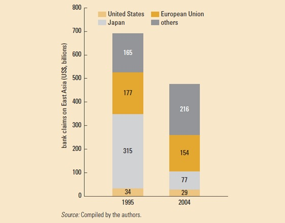

FINANCE AND RISK
Finance and Risk
Many middle-income country governments had based policy on the belief that deep involvement in global supply chains required fixed exchange rates. But they discovered that international finance followed supply chains, creating two sources of vulnerability: currency risk and balance sheet risk associated with plentiful external liquidity being made available for investments throughout the economy, including nontradeable activities such as real estate.
Our recommendation was to move toward more flexible exchange rates, while developing local financial markets to permit firms more opportunities to hedge the forex risk. Indeed, middle-income countries have been moving steadily in this direction, recovering monetary policy as an instrument of macroeconomic management.
East asia shows less exposure to bank credit and a more diversified supply
According to the IMF, many countries have revised prudential requirements to improve the liquidity, solvency and risk management of the financial sector. At the same time, despite bouts of capital flow volatility stemming from the tapering of quantitative easing by the Federal Reserve, there has been a trend toward the overall liberalization of capital transactions, notably on capital and money market instruments. Globally, the world is roughly evenly split between countries relying on an exchange rate anchor for monetary policy (mostly small islands and members of currency unions in Africa, for example), and those with more independent monetary policy (including most high-income countries).